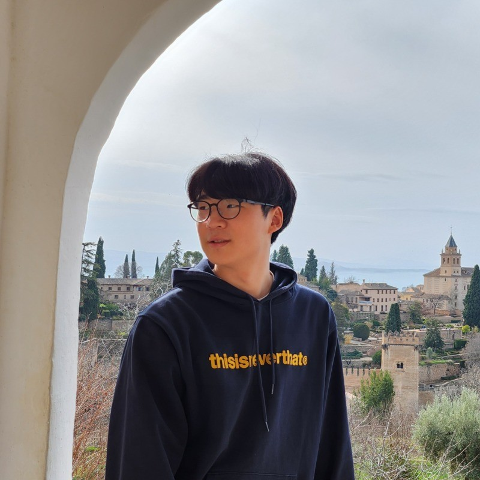

Heading to ICML 2026
I will be attending the International Conference on Machine Learning this July.

M.S. Student at KAIST School of Computing
I study how AI systems behave across cultures and contexts—and build benchmarks that make their hidden failures easier to see.
About me
I am an M.S. student in Computer Science at KAIST, where I work in the U&I Lab with Professor Alice Oh. My research focuses on evaluating AI systems—especially multimodal models—in culturally diverse and real-world settings.
I design datasets and benchmarks that surface hidden model failures, measure robustness, and help make AI systems more transparent and reliable.
Outside research, I enjoy turning ideas into products. I am also the founder of Particall, a social platform designed to help people find others to play games with.
When I am away from a screen, you will usually find me playing guitar, reading, or looking for a better cup of coffee.
What I’m up to
I will be attending the International Conference on Machine Learning this July.
Our multicultural, multimodal, and multilingual benchmark for AI risk and reliability is now available on arXiv.
World in a Frame explores culture mixing as a new challenge for vision-language models.
When Tom Eats Kimchi received the Outstanding Paper award at C3NLP 2025.